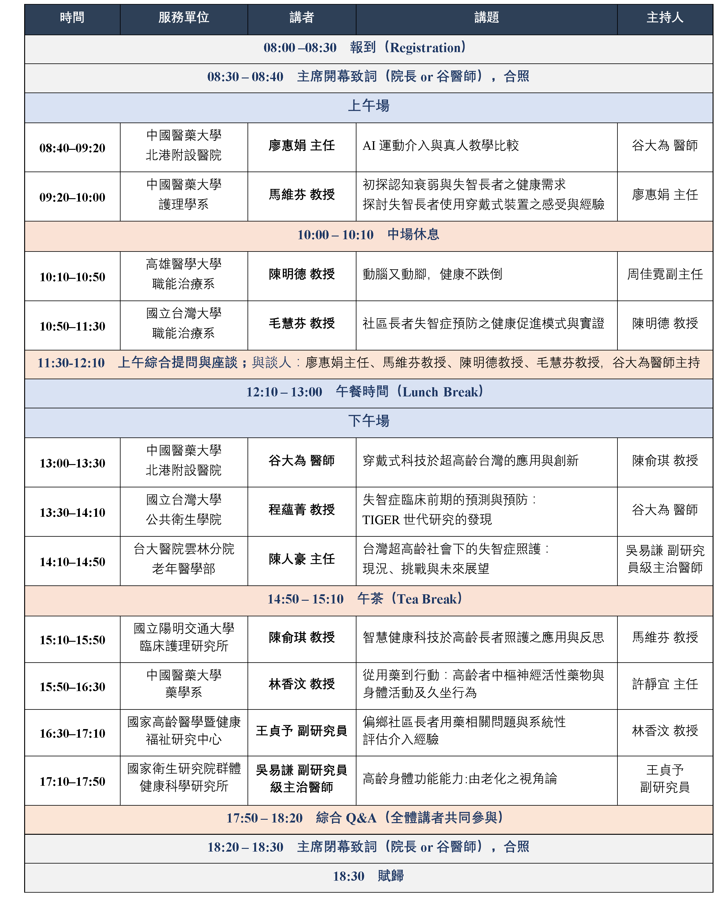
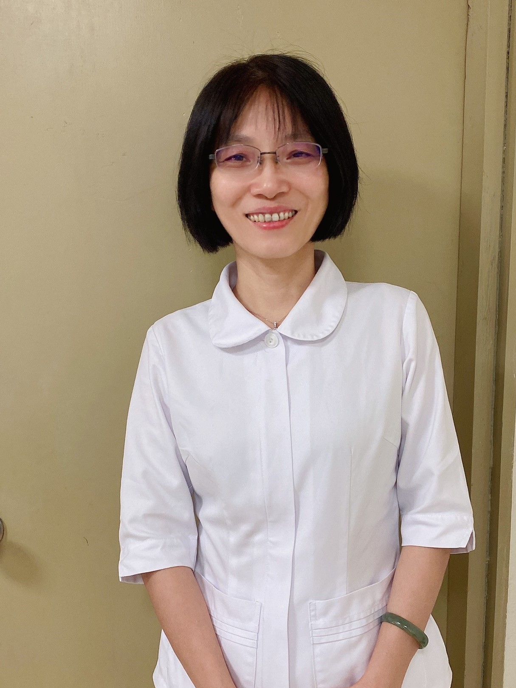
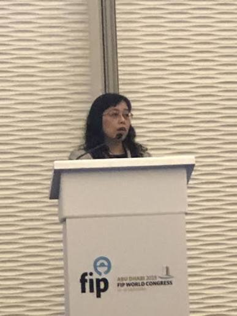
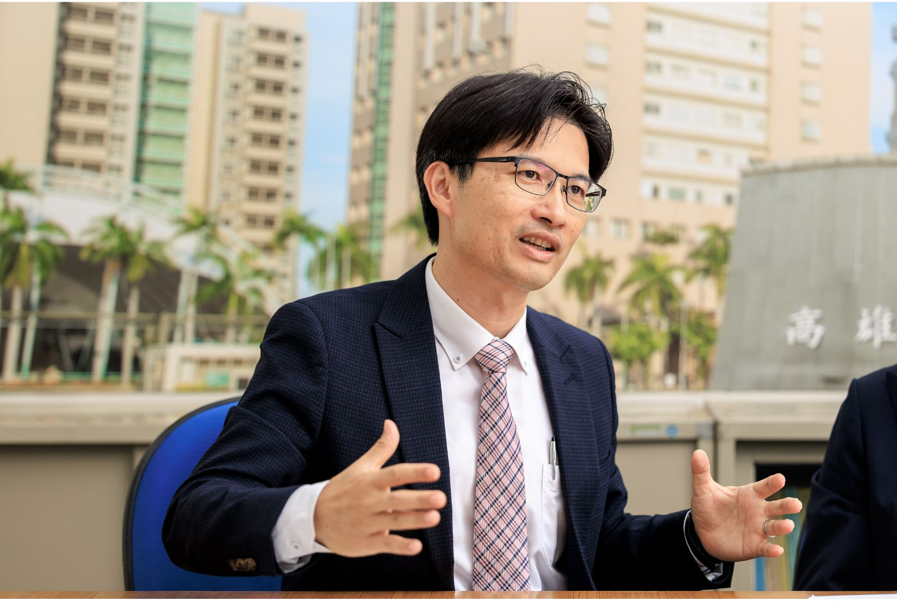
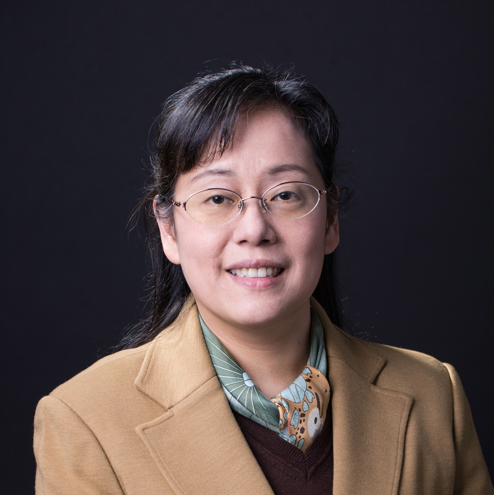

ANNOUNCEMENT
公告
公告日期：
公告日期：
- 本研討會議程資訊於2026.08.14已公告，請查閱置頂內文。
- 為使交通不便者能共同參與，準備了交通接駁，如有需搭乘者，請務必在「報名表單」登記，屆時並請準時搭乘，逾時不候。
- 更多活動內容與資訊將陸續更新，敬請期待。

ANNOUNCEMENT
公告日期：
公告日期：
FOCUS AREAS
SESSION CHAIRS
GUEST SPEAKERS
——講者、主持人名單依姓氏筆畫排序。




ORGANIZING COMMITTEE
谷大為 中國醫藥大學北港附設醫院 身心科主治醫師
周佳霓 中國醫藥大學北港附設醫院社區健康長照中心 副主任
廖惠娟 中國醫藥大學北港附設醫院護理部 主任
侯柏辰 中國醫藥大學北港附設醫院健康台灣深耕計畫專案辦公室 主任
葉家惠 中國醫藥大學北港附設醫院 失智共照中心個管師
李靜如 中國醫藥大學北港附設醫院神經內科 失智個管師
柳瓊姿 中國醫藥大學北港附設醫院 腦中風個管師
林梅涔 中國醫藥大學北港附設醫院 居家護理師
萬力勻 中國醫藥大學北港附設醫院 研究助理
江岳恆 中國醫藥大學北港附設醫院 研究助理
吳俊諺 中國醫藥大學北港附設醫院 研究助理
CONFERENCE VENUE
高鐵嘉義站 → 搭乘計程車約 20 分鐘可至會場。
嘉義火車站 → 搭乘計程車約 10 分鐘可至會場。
國道一號由嘉義出口下交流道 → 北港路直走 → 遇四維路左轉 → 抵達會場。